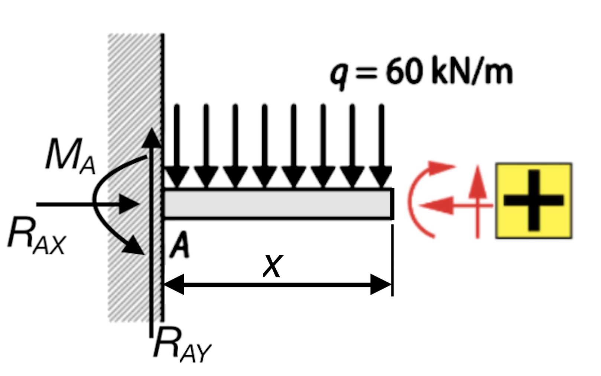

Enunciado
Elabora los diagramas de momentos flectores y de esfuerzos cortantes correspondientes a la viga en voladizo de la figura, con carga uniformemente distribuida:

Elabora los diagramas de momentos flectores y de esfuerzos cortantes correspondientes a la viga en voladizo de la figura, con carga uniformemente distribuida:
En este caso hay un solo apoyo donde se encuentran las tres reacciones, al ser un apoyo empotrado:

Fíjate que el momento de reacción, MA, tiene sentido antihorario porque debe oponerse al momento creado por la carga que hay sobre la viga, que provoca un momento en A con sentido horario.
Las ecuaciones para equilibrar la viga serán:
Equilibrio de fuerzas en el eje horizontal \(\sum_{}^{}F_{x}=0\):
\[R_{AX}=0\]
Equilibrio de fuerzas en el eje vertical \(\sum_{}^{}F_{y}=0\) (positivas fuerzas hacia arriba y negativas fuerzas hacia abajo). La carga distribuida tiene un valor en kN/m, por lo que hay que multiplicarla por toda la longitud sobre la que actúa para obtener la fuerza total que ejerce sobre la viga (q·L):
\[R_{AY}-q·L=0\]
Por lo tanto:
\[R_{AY}=q·L\]
Equilibrio de momentos de fuerzas, referido a una sección cualquiera de la viga \(\sum_{}^{}M_{A}=0\). Calcularemos los momentos en el único apoyo A, que es donde están las restricciones. Por tanto, ni RAX ni RAY provocan momento en A, por lo que la ecuación queda muy simple.
A efectos de momento, la carga distribuida equivale a una carga de valor \(q·L\) aplicada en el centro exacto de la distribución. En este caso, estará aplicada a a una distancia de L/2 del apoyo A. La ecuación quedará, por tanto (momentos positivos en sentido antihorario y negativos en sentido horario):
\[-q·L· \frac{L}{2} +M_{A}=0\]
Es decir:
\[M_{A}=-q· \frac{L^2}{2} \]
Sustituyendo los datos del problema, podemos calcular directamente las 3 reacciones:
\[\begin{array}{l}R_{AX}=0 \ N\\ R_{AY}=60 \ \frac{kN}{m}·3 \ m=180 \ kN \\ M_{A}=60 \ \frac{kN}{m} ·\frac{3^2}{2} \ m^2=270 \ kN·m \end{array} \]
Como solo tenemos una carga sobre la viga y, además, ocupa toda la longitud de esta, no es necesario cortar la viga. Los esfuerzos serán continuos en toda su longitud.
Nos encontramos con el siguiente trozo de viga (se han indicado en rojo los sentidos positivos de los esfuerzos):

Esfuerzo axil:
El esfuerzo axil es nulo, ya que no hay fuerzas en dirección paralela al eje de la viga:
\[N(x)=R_{AX}=0 \ N\]
Esfuerzo cortante:
Tanto la componente vertical RAY de la reacción en el apoyo A como la carga distribuida q, generan esfuerzo cortante en la viga. La fuerza total que produce q depende de la distancia x y vale \(q·x\). Como RAY va hacia arriba, se cuenta como positiva. Como \(q·x\) va hacia abajo, se cuenta como negativa:
\[V(x)=R_{AY}-q·x=180-60x \ kN\]
Momento flector:
El momento flector es generado por la reacción RAY, cuya distancia a la sección x es la propia distancia x, por la carga distribuida q, que genera una fuerza \(q·x\) a una distancia de \( \frac{x}{2} \ m \) y por el momento de reacción del empotramiento MA.
\[M(x)=R_{AY}·x-q·x·\frac{x}{2} -M_{A}=180x-60 \frac{x}{2}-270=-30x^2+180x-270 \ kN·m\]
Recapitulando lo calculado antes, tenemos las siguientes leyes de esfuerzos en la barra (incluimos los valores extremos para que sea más fácil dibujar los diagramas):
\[\begin{align*}
&\text{Ámbito: } 0 \le x \le 3 \ \text{(m)}\\[2mm]
\textbf{Esfuerzo axil:}\quad &N(x)=0 \quad [\text{kN}]\\[3mm]
\textbf{Cortante:}\quad &V(x)=60\,(3-x)=\boxed{\,180 - 60x\,}\quad [\text{kN}]\\[3mm]
\textbf{Momento flector:}\quad
&M(x)=-30\,(x-3)^2
=-30\,(x^2-6x+9)
=\boxed{\, -30x^2 + 180x - 270\,}\quad [\text{kN·m}]\\[3mm]
\textbf{Valores extremos:}\quad
&V(0)=180,\ \ V(3)=0;\qquad M(0)=-270,\ \ M_{max}=M(3)=0.
\end{align*}\]
Así, el diagrama de cortantes será lineal y el de momentos flectores parabólico:

Elabora los diagramas de momentos flectores y de esfuerzos cortantes correspondientes a la viga en voladizo de la figura:
 Solución (partiendo del punto B):
Solución (partiendo del punto B):
Momentos flectores:
• Para 0 m ≤ x ≤ 4 m → M(x) = - 5x kN·m
• Para 4 m ≤ x ≤ 6 m → M(x) = 2,5x2 + 15x - 40 kN·m
• Para 6 m ≤ x ≤ 8 m → M(x) = 50 - 15x kN·m
Esfuerzos cortantes:
• Para 0 m ≤ x ≤ 4 m → V(x) = -5 kN
• Para 4 m ≤ x ≤ 6 m → V(x) = -5x + 15 kN
• Para 6 m ≤ x ≤ 8 m → V(x) = -15 kN
Obra publicada con Licencia Creative Commons Reconocimiento No comercial Compartir igual 4.0